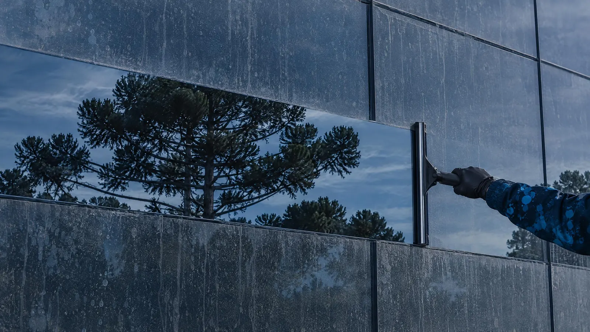
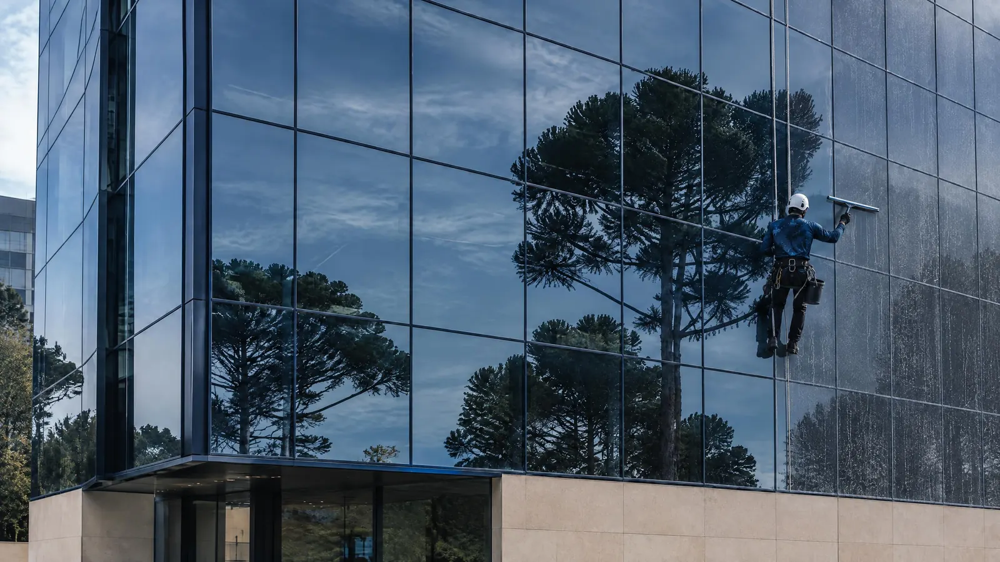

Abre rápido no celular
Quem procura no celular desiste de site lento e chama o próximo da busca.
- Hoje
- {{VEL_ATUAL}} até a imagem principal aparecer
- No novo
- {{VEL_NOVO}}, no mesmo teste
Duas opções da página principal. O site é o mesmo nas duas: só muda a foto da entrada.
Vale abrir no celular, que é onde a maioria das pessoas vai ver.

O resultado aparece primeiro: uma passada do rodo e o vidro volta a refletir a cidade.

O trabalho aparece primeiro: a equipe em altura, na fachada do prédio.
As imagens são cenas ilustrativas geradas por inteligência artificial. Conforme chegarem as fotos reais de vocês, elas entram no lugar.
Quem procura no celular desiste de site lento e chama o próximo da busca.
Foi o pedido de vocês: aparecer pra quem procura limpeza de vidros.
O Google lê a lista de páginas do site. Quanto mais limpa, melhor ele entende o que importa.
Quanto menos a pessoa precisa pensar no que escrever, mais gente chama.
Síndico, dono de loja e morador procuram coisas diferentes.
Quanto a mais de orçamento, só o número vai dizer. Por isso medimos desde o primeiro dia e voltamos no dia 30 com o resultado na mão.
Lido no site atual em 05/11/2026. Velocidade: média de 3 testes em cada site, com celular e internet 4G simulados nas mesmas condições.
Vocês não precisam abrir nenhum painel. Todo mês, o resumo chega pronto.